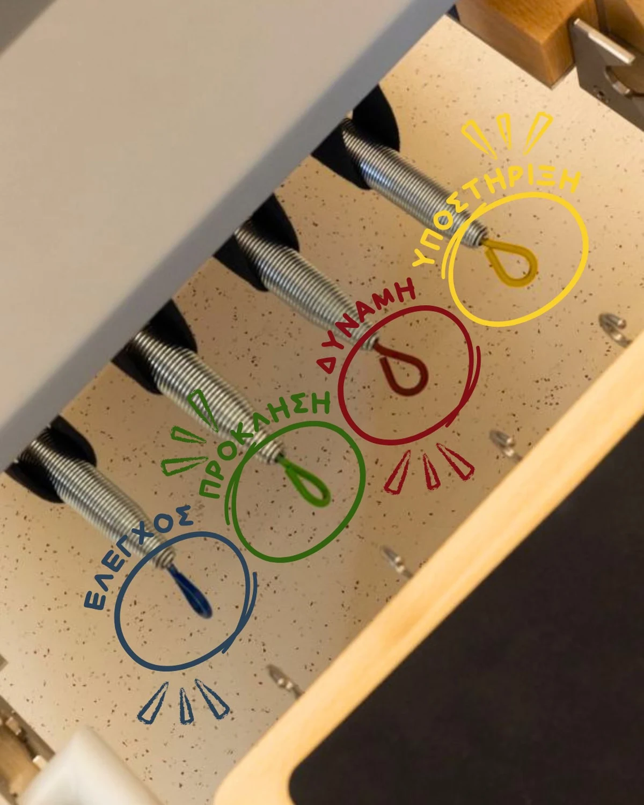

ΔΥΝΑΜΗ ΜΕ ΕΛΕΓΧΟ
Reformer
Η αντίσταση γίνεται εργαλείο κίνησης.
Μια κινούμενη πλατφόρμα, ελατήρια και ιμάντες δημιουργούν πολλές δυνατότητες άσκησης. Στο Reformer δουλεύουμε στη δύναμη, στη σταθερότητα και στη ρευστή κίνηση, με συνεχή καθοδήγηση.
Η αντίσταση προσαρμόζεται σε κάθε άσκηση. Δεν επιλέγουμε απλώς περισσότερα ελατήρια· επιλέγουμε τον συνδυασμό που υπηρετεί τον στόχο της κίνησης και τις δικές σου ανάγκες.
- Ενδυνάμωση σε βάθος
- Έλεγχος και συγκέντρωση
- Σταθερότητα και κινητικότητα

ΤΑ ΧΡΩΜΑΤΑ ΤΩΝ ΕΛΑΤΗΡΙΩΝ
Κάθε χρώμα,
διαφορετική αντίσταση.
Ο παρακάτω οδηγός ακολουθεί το ενημερωτικό υλικό του studio. Κάθε ελατήριο επιλέγεται ανάλογα με την άσκηση και τον ασκούμενο.
- Κίτρινο
- Η μικρότερη αντίσταση, για ασκήσεις που δίνουν έμφαση στον έλεγχο.
- Μπλε
- Μέτρια αντίσταση, για ισορροπία ανάμεσα στην υποστήριξη και την κίνηση.
- Πράσινο
- Αρκετή αντίσταση, για μεγαλύτερη πρόκληση ανάλογα με την άσκηση.
- Κόκκινο
- Πολύ υψηλή αντίσταση, για περισσότερη δύναμη σε απαιτητικές ασκήσεις.
- Μαύρο
- Η μεγαλύτερη αντίσταση στον συγκεκριμένο οδηγό, για πιο απαιτητική δουλειά.
Τα χρώματα και οι αντιστάσεις διαφέρουν ανά κατασκευαστή και όργανο. Τον κατάλληλο συνδυασμό για κάθε άσκηση τον επιλέγει η εκπαιδεύτρια.